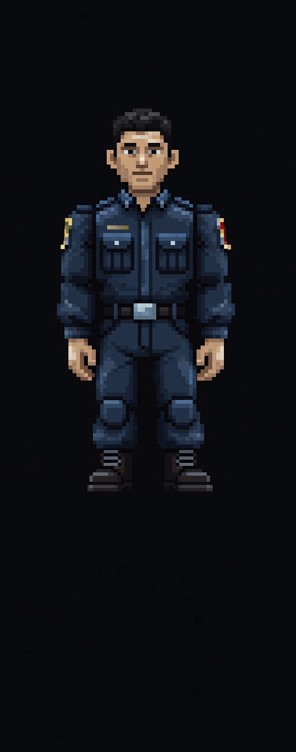
kaynak kare — 592×1504

oyun ölçeğinde (45px) — 17× küçültme
AI ile üretilen sanat varlıkları. Hepsi PixelLab ile üretilip oyunun
paletine indirildi.
Araçlar: tools/gen_portre.py (portre) ·
tools/gen_karakter.py (karakter sprite)
Karakteri küçültmek yerine dünyayı karakterin seviyesine çıkarma denemesi. Sahne 192×108 üretildi — oyunun mevcut çözünürlüğü. Karakter üzerine konduğunda ölçek ve piksel yoğunluğu tutuyor.
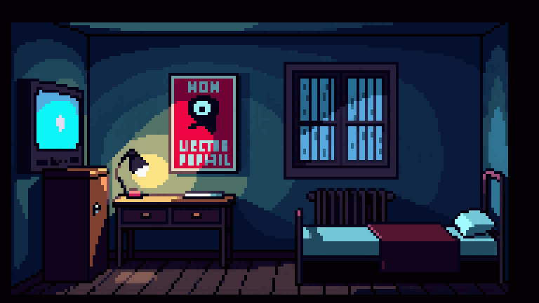
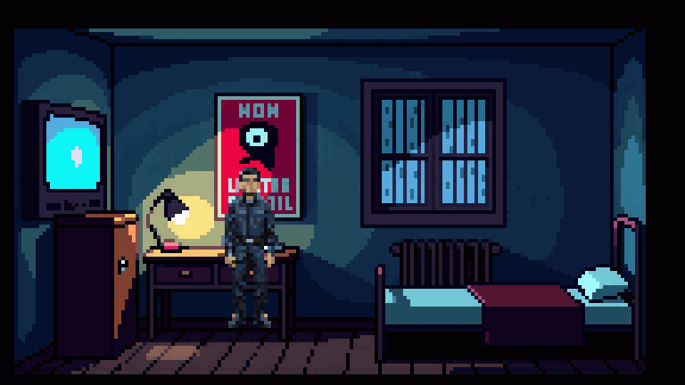
Bölüm 1'in bulmacası canlı ışığa dayanıyor (lambayı söndür, perdeyi kapat, devriye ışığını camla masaya yansıt). Sabit resim bunu yapamaz — ama mevcut ışık motoru AI resmin üstünde çalıştırılabilir. Kanıt:
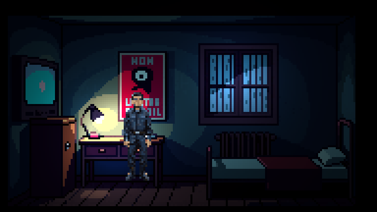
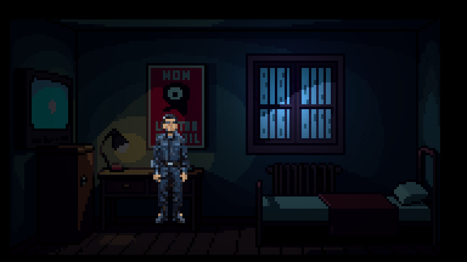
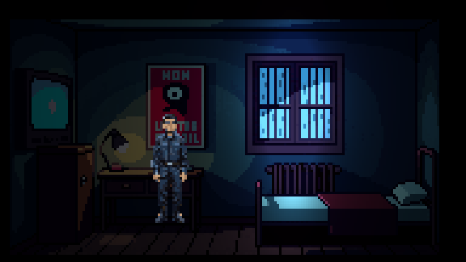
Aynı arka plan, üç farklı ışık durumu. Mekanik korunuyor.
AutoSprite V3 ile üretildi (karakterimiz referans görsel olarak verildi). Kaynak sanat PixelLab'den belirgin şekilde daha iyi. Ama iki sorun çıktı: video modeli "walk cycle" yönergesini uygulamadı (üç klip de neredeyse durağan), ve oturma klibi kendi masasını içeriyor.

İskelet pozları kodla kurgulanıp modele çizdirildi — kimlik ve ölçek sabit kalıyor, hareket garanti. Tüm kareler ortak kırpma kutusu + ayak hizası ile kesildiği için idle ↔ yürüme ↔ oturma geçişlerinde zıplama olmaz.
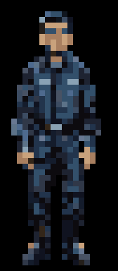
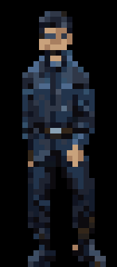
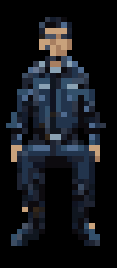
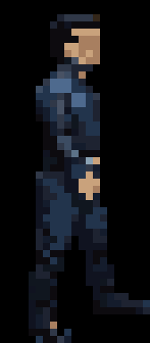
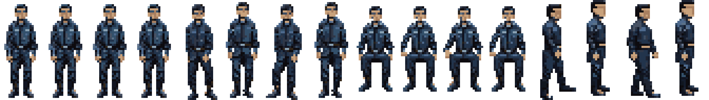
5 aday, aynı komuttan farklı çekirdeklerle. 10× büyütülmüş. Hangisini istersiniz? (numarayı söylemeniz yeterli)


Oyunda görüneceği boyut (solda) ve şu anki elle çizilmiş karakter ölçüsü.
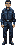
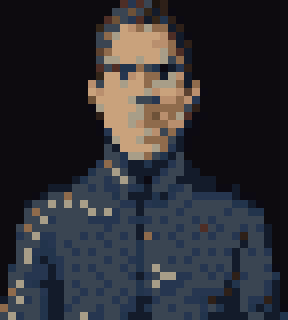
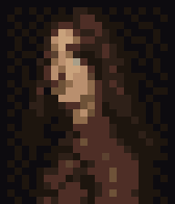
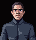
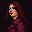